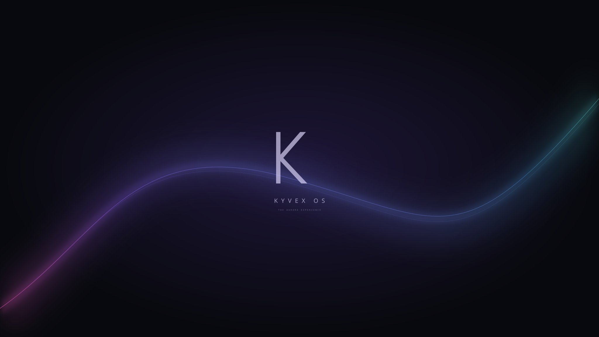

K
Локальна сесія
ВАША СИСТЕМА. ВАШІ ПРАВИЛА.
Готові до більшого.
Спокійний робочий простір для допитливого розуму.
AURORA EDITION
KYVEX WORKSPACEДосліджуйте.
Досліджуйте.
Розумійте. Захищайте.
Інструменти кібербезпеки, відкритий код
і свобода Arch Linux в одному просторі.
LINUX / WAYLAND / PLASMA01 — THE AURORA EXPERIENCE
Під рукою
Ваш щоденний набірПульс системи
Зчитуємо дані…TOOLKIT / 02
Ваш арсенал.
Від мережевого аналізу до цифрової криміналістики.
Мережеві CLI-інструменти відкривають довідку. Досліджуйте системи, на аудит яких маєте дозвіл.
За цим запитом нічого не знайдено.
SECURITY / 03
Почнімо з основ.
Прозорий стан захисту без вигаданих рейтингів.
Безпека — це процес.
Вхідні з’єднання блокуються типовими правилами nftables; SSH вимкнений. Тут відображається поточний стан служб.
Мережевий фаєрвол
Служба nftables; правила доступні в /etc/nftables.conf
Віддалений доступ SSH
Автоматично не вмикається.
Журнал аудиту
Служба auditd для системних подій.
Модулі безпеки ядра
Зчитування…
Live-сесія: користувач і пароль — kyvex. Root заблокований. Зміни без встановлення не зберігаються після перезавантаження.
CONNECTIONS / 04
Залишайтесь на зв’язку.
Локальні інтерфейси та адреси вашої системи.
Зчитування інтерфейсів…
Працює і без хмари.
Центр керування читає локальні дані. Телеметрії та віддаленого API в ньому немає.
PERSONALIZE / 05
Відчуйте Aurora.
Глибокі поверхні, спектральне світло та плавний рух.

АКТИВНА ТЕМА
Північне сяйво.
Aurora / графіт · фіолетовий · м’ятний
Оформлення робочого столу
Шрифти, масштаб, теми та поведінка вікон.
Super — меню · Super + Enter — термінал · Super + E — файли · Alt + Shift — US / UA
ABOUT / 06
Знайомтесь. KYVEX.
Незалежний дистрибутив на базі Arch Linux.
KYVEX OS 0.8.1 Alpha
Linux, пакунки Arch, робочий стіл KDE Plasma / Wayland.
Візуальна основа: DuoDesk Aurora від 0xCodez,
на основі TwinDesk © 2026 inukaasith.
Ідея KYVEX OS та адаптація дизайну —
Центр керування й оформлення: GPL-3.0.
Geist / Geist Mono: SIL Open Font License.
Експериментальний випуск. Перевірка обладнання та інсталятора ще триває.
Документація і джерела: /usr/share/doc/kyvex та /usr/share/kyvex/source.